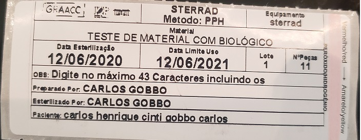

RASTREABILIDADE DE PRODUTO

Etiquetas com código de barra de indentificação de cada peça e/ou caixa.Pode-se utilizar códigos de barra simples ou QR Code.
A leitura é feita por um leitor de código de barras e a informação enviada diretamente para o sistema.
A leitura é feita por um leitor de código de barras e a informação enviada diretamente para o sistema.
RASTREABILIDADE DE PROCESSO
Etiquetas onde são impressas as informações de todos processos a que o material foi submetido e quem a manipulou.
As etiquetas podem ou não conter indicador classe 1, serem ou não duplo uso. O tamanho é definido de acordo com a necessidade do cliente, assim como divisões internas para separação de partes da etiqueta. Para cada tipo de processo, a etiqueta é produzida com um material específico e levará, se necessário, o indicador exclusivo do processo onde será utilizada.
As etiquetas podem ou não conter indicador classe 1, serem ou não duplo uso. O tamanho é definido de acordo com a necessidade do cliente, assim como divisões internas para separação de partes da etiqueta. Para cada tipo de processo, a etiqueta é produzida com um material específico e levará, se necessário, o indicador exclusivo do processo onde será utilizada.
CmeTrack
O CmeTrack é um sistema desenvolvido junto com o cliente para suprir suas necessidades.
Desde uma máscara simples para impressão, até um sistema de controle e gerenciamento de todo CME, o CmeTrack entrega padronização de informação, facilidade de uso,desenvolvimento customizado, gerenciamento do CME, controle dos instrumentais e caixas e sua movimentação(Rastreabilidade de Produto), impressão de informações para anexo ao prontuário do paciente(Rastreabilidade de Processo) e geração de índices para gerencimaneto do CME através de relatórios. Exemplos: Relatório de Carga,Relatório de validade, Quantidade de etiquetas impressas,Indicadorese testes, etc.. A soma destes 3 processos é o que chamamos de RASTREABILIDADE TOTAL.
Desde uma máscara simples para impressão, até um sistema de controle e gerenciamento de todo CME, o CmeTrack entrega padronização de informação, facilidade de uso,desenvolvimento customizado, gerenciamento do CME, controle dos instrumentais e caixas e sua movimentação(Rastreabilidade de Produto), impressão de informações para anexo ao prontuário do paciente(Rastreabilidade de Processo) e geração de índices para gerencimaneto do CME através de relatórios. Exemplos: Relatório de Carga,Relatório de validade, Quantidade de etiquetas impressas,Indicadorese testes, etc.. A soma destes 3 processos é o que chamamos de RASTREABILIDADE TOTAL.